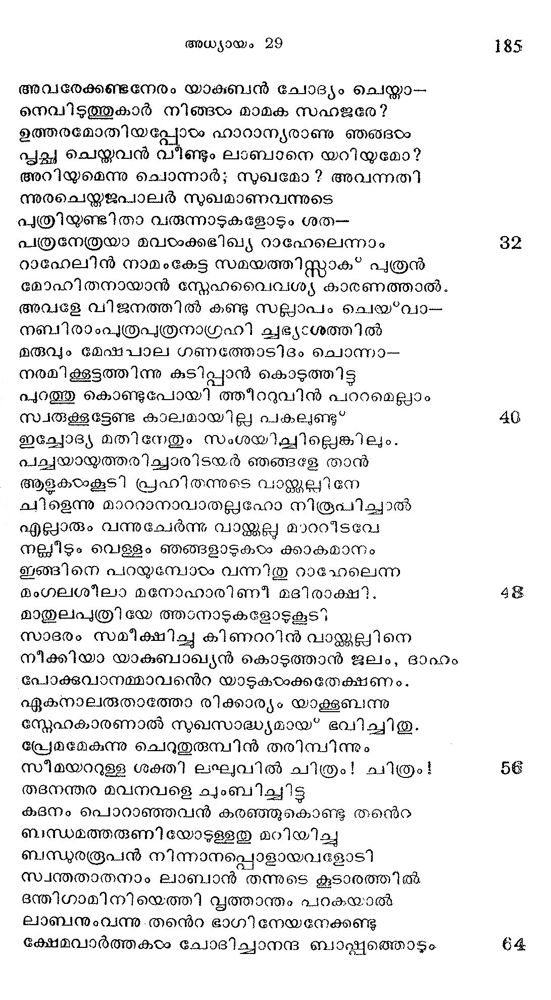
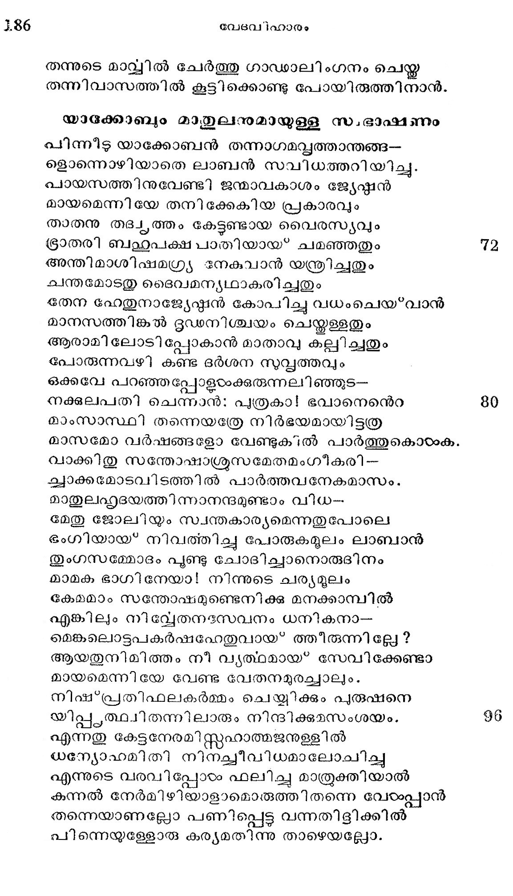
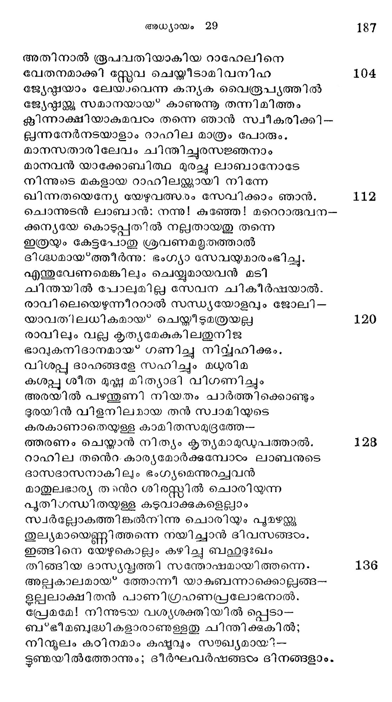
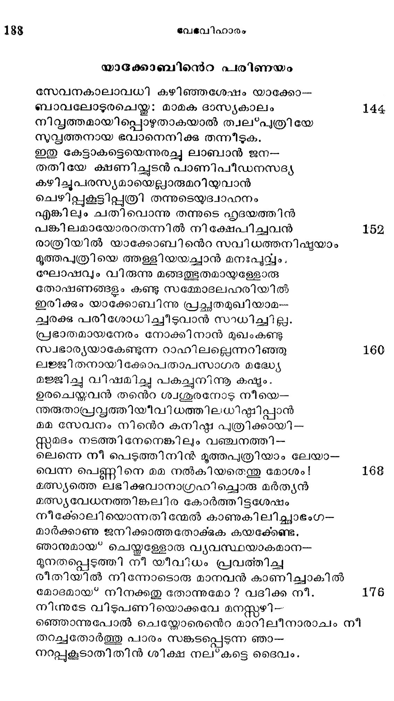
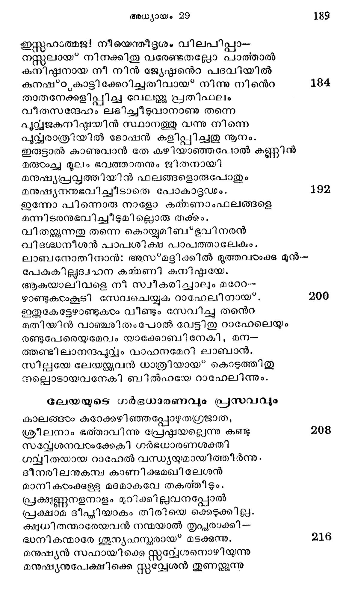
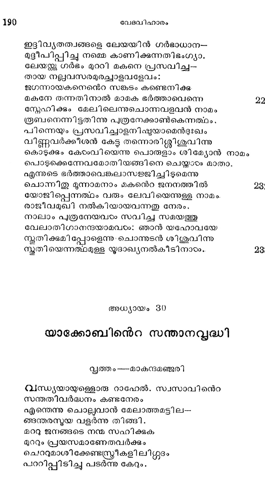

യാക്കോബിന്െറ പൂര്വ്വദേശഗമനവും മാതുലപത്രീസന്ദര്ശനവും
വ്ൃത്തം---കേക
നവമ്പൂര്ണ്ണ ഭക്തിയോടീ വാക്കുകളോതി യാക്കോ--
ബുമ്പര്കോന് പദം നിജമനസ്സിലുറപ്പിച്ചു
കമ്പമാകവേ വിട്ട തൽ പ്ഥത്തൂടേ പോയാന്
വന്പനാം മാതുലനന്െറ നിവാസദേശം നോക്കി.
ഭക്തന്മാര് നിജജന്മസ്വഭാവ ദിക്കില്നിന്നു
വ്യക്തമാം മുമുക്ഷുതവ ഹേതുവാല് പുറപ്പെട്ട
ശുദ്ധമാം ജലാപ്്പാവം കഴിഞ്ഞു മതപീഡാ-
ഭിഖ്യമാം മരുഭൂമി ദുഃഖേന താണ്ടുംപോലേ 8
ഫലസ്തീന്ജനപടദസ്ഥി തമാം ബേര്ശേബ വി--
ടൂലച്ച മറിയുന്ന യൂര്ദിനാന് കടന്ന പിന്--
പറബി മണല്ക്കാട്ടിന് വടഭാഗത്തുകൂടി --
യരാമൃപുരം നോക്കി ത്തൊങ്ങിനാന് യാക്കോബാഖ്യന്.
പ്രത്യഹം മുപ്പതീതു നാഴിക നടന്നാലും
പത്തോടഞ്ചഹസ്ത കൊണ്ടല്ലാതെ യെത്തീടാത്ത
ദ്രാഘിഷ്ടമായ വഴി ജായാസംവരണാത്ഥം
ദ്രാഗതിവത്തിച്ചിട്ട കിഴക്കുദേശം ചേര്ന്നു. 16
ധ്വാന്തസ്ഥമായ ലോകം പൂര്വോദയാദ്രി കണ്ടു
സ്വാന്ത സമ്മോദം പാരമിയലുന്നതുപോലെ
കിഴക്ക ദിക്കിലെത്തി സ്റ്റന്തുഷ്ടനായിത്തീര്ന്നു
വഴക്കു പേടിച്ചോടി പ്പോയൊരു പടുപ്രജ്ഞന്.
അവിടെനിന്നു ചുററും നോക്കിയനേരം കണ്ടാന്
ഭുവനപരിപൂര്ണ്ണമായോരു കൂപം ഭംഗ്യാ.
കിടക്കുന്നതിന് ച്വററു മാജുകം മൂന്നു പററം
കുടിപ്പാന് ജലമാശി ചുിടയരോടുംകൂടെ. 24

അവരേക്കണ്ടനേരം യാക്ബന് ചോദ്യം ചെയ്താ-
നെവിടത്തുകാര് നിങ്ങടം മാമക സഹജരേ?
ഉത്തരമോതിയപ്പോഴം ഹാറാന്യരാണു ഞങ്ടഠം
വ്ക്ഛ ചെയ്തവന് വീണ്ടും ലാബാനെ യറിയുമോ?
അറിയമെന്നു ചൊന്നാർ; സുഖമോ ? അവന്നതി്
അനരചെയ്യതജപാലര് നുഖമാണവന്നുടെ
പുത്രിയുണ്ടിതാ വരുന്നാടുകളോടും ശത-
പത്രനേത്രയാ മവടംക്കഭിഖ്യ റാഹേലെന്നാം
റാഹേലിന് നാമംകേട്ട സമയത്തിസ്റ്റാക* പുത്രന്
മോഹിതനായാന് സ്നേഹവൈവശ്യ കാരണത്താൽ.
അവളേ വിജനത്തില് കണ്ടു സല്ലാപം ഒചെയ?വാ--
നബിരാംപുത്രപുത്രനാഗ്രഹി ചഭ്യഃശത്തില്
മരുവും മേഷപാല ഗണത്തോടിദം ചൊന്നാ-
നരമിക്കൂട്ടത്തിന്നു കുടിപ്പാന് കൊടുത്തിട്ടു
പുറത്തു കൊണ്ടുപോയി ത്തീറുവിന് പററമെല്ലാം
സ്വരുക്കൂട്ടേണ്ട കാലമായില്ല പകലുണ്ടു്
ഇച്ചോദ്യ മതി നേതും സംശയാച്ചില്ലെങ്കിലും.
പച്ചയായുത്തരിച്ചാരിടയർ ഞങ്ങളേ താന്
ആളകയാകൂടി പ്രഹിതന്നുടെ വാജ്കകല്പിനേ
ചു ളെന്നു മാററാനാവാതല്ലഹോ നിരൂപിച്ചാൽ
എല്ലാരും വന്നുചേര്ന്നു വാജ്ക്കല്ല മാററീടവേ
നല്ലീടും വെള്ളം ഞങ്ങളാടുകടം ക്കാകമാനം
ഇങ്ങിനെ പറയുമ്പോടം വന്നിതു റാഹേലെന്ന
മംഗലശീലാ മനോഹാരിണീ മദിരാക്ഷി.
മാതുലപത്രിയേ ത്ത൦നാടുകളോടുകൂടി
സാദരം സമീക്ഷിച്ച കിണററിന് വാജ്ക്കലിനെ
നീക്കിയാ യാകുബാഖ്യന് കൊടുത്താൻ ജലം, ദാഹം
പോക്കവാനമ്മാവനന്െറ യാടുകടംക്കതേക്ഷണം.
ഏകുനാലരുതാത്തോ രിക്കാര്യം യാക്കൂബന്നു
സ്നേഹകാരണാല് സുഖസാദ്ധ്യമായ* ഭവിച്ചിതു.
പ്രേമമേകുന്നു ചെറുതുരുമ്പിന് തരിസമ്പിന്നും
സീമയററുള്ള ശക്തി ലഘുവില് ചിത്രം! ചിത്രം!
തഭനന്തര മവനവളെ ചുംബിച്ചിട്ട
കടന പൊറാഞ്ഞവന് കരഞ്ഞുകൊണ്ടു തന്െറ
ബന്ധമത്തരുണിയോടുള്ളതു മറിയിച്ചു
ബന്ധുരരൂപന് നിന്നാനപ്പൊളായവമോട്
സ്വന്തതാതനാം ലാബാന് തന്നുടെ കൂടാരത്തില്.
ഭന്തിഗാമിനിയെത്തി വൃത്താന്തം പറകയാല്
ലാബനുംവന്നു തന്െറ ഭാഗിനേയനേക്കണ്ടു
ക്ഷേമവാര്ത്തകടം ചോദിച്ചാനന്ദ ബാച്ക്ത്തൊടും.

തന്നുടെ മാവ്വില് ചേര്ത്തു ഗാഡാലിംഗനംചെ
തന്നിവാസത്തില് കൂട്ടിക്കൊണ്ടു പോയിരുത്തിനാന്.
യാഭക്കാബ്ും മാതുലനുമായുള്ള സ.ഭാഷണം
പിന്നീട യാക്കോബന് തന്നാഗമവൃൃത്താന്തങ്ങ--
ളൊന്നൊഴിയാതെ ലാബന് സവിധത്തറിയിച്ചു.
പായസത്തിന൯ുവേണ്ടി ജന്മാവകാശം ജ്യേഷ്ടന്
മായമെന്നിയേ തനിക്കേകിയ പ്രകാരവും
താതനു തദഷ്ൃത്തം കേട്ടണ്ടായ വൈരസ്യവും
ഭ്രാതരി ബഛുുപക്ഷപാതിയായ* ചമഞ്ഞതും 72
അന്തിമാശിഷമഗ്ര്യ നേകുവാന് യന്ത്രിച്ചതും
ചന്തമോടതു ദൈവമന്യഥാകരിച്ചതും
ഭതന ഹേതുനാജ്യേഷ്ഷന് കോപിച്ചു വധംചെയ*വാന്
മാനസത്തിങ്കല് ദൂഡനിശ്ചയം ചെയ്തളളതും
ആരാമി ലോടി പ്പോകാന് മാതാവു കല്പിച്ചതും
പോരുന്നവഴി കണ്ട ദര്ശന സു്ൃത്തവും
ഒക്കവേ പറഞ്ഞ പ്പോളടംക്കുരുന്നലിഞ്ഞുട--
നക്കുലപതി ചെന്നാന്: പുത്രകാ! ഭവാനെന്െറ 80
മാംസാസ്ഥി തന്നെയത്രേ നിര്ഭയമായിട്ടത്ര
മാസമോ വര്ഷങ്ങളോ വേണ്ടുക1ല് പാര്ത്തുകൊടംക.
വാക്കിതു സന്തോഷാശ്രസമേതമംഗീകരി-
ച്വാക്കമോടവി ടത്തില് പാര്ത്തവനേകമാസം.
മാതുലഹൃദയത്തിന്നാനന്ദമുണ്ടാം വിധ-
മേതു ജോലിയും സ്വന്തകാര്യമെന്നതുപോലെ
ഭംഗിയായ് നിവത്തിച്ചു പോരുകമൂലം ലാബാന്
തുംഗസമ്മോദം പൂണ്ടു ചോദിച്ചാനൊരുദിനം
മാമക ഭാഗി നേയാ! നിന്നുടെ ചര്യമൂലം
കേമമാം സന്തോഷമുണ്ടെനിക്കു മനക്കാമ്പില്
എങ്കിലും നിവ്വേതനഭസവനം ധനികനാ-
മെങ്കലൊട്ടപകര്ഷഹേതുവായ* ത്തീരുന്നില്ലേ ?
ആയതുനിമിത്തം നീ വൃത്ഥമായ* സേവിക്കേണ്ടാ
മായമെന്നിയേ വേണ്ട വേതനമുരച്ചാലും.
നിഷ':*പ്രതിഫലകര്മ്മം ചെയ്യിക്കും പുരുഷനെ
യിപ്പ,ത്ഥിതന്നിലാരും നിന്ദിക്ഷമസംശയം. 98
എന്നതു കേട്ടനേരമി സ്റ്റഹാത്മജനുള്ളില്
യന്യോഹമിതി നിനച്ചീവിധമാലോചി
എന്നുടെ വരവിപ്പോരം ഫലിച്ചു മാത്രുക്തിയാല്
കന്നല് നേര്മിഴിയാളാമൊരുത്തിതന്നെ വേരംപ്പാന്
തന്നെയാണല്ലോ പണിപ്പെട്ട വന്നതിളിക്കില്
പിന്നെയുള്ളോരു കര്യമതിന്നു താഴെയല്ലോ.

അതിനാല് രൂപവതിയാകിയ റാഹേലിനെ
വേതനമാക്കി സ്റ്റേവ ചെയ്തീടാമിവനിഹ
ജ്യേഷ്ഷയാം ലേയാവെന്ന കന്യക വൈരപ്ൃയത്തില്
ജ്യേഷ്ടത്്കു സമാനയായ* കാണുന്നൂ തന്നിമിത്തം
ക്ലിന്നാക്ഷിയാകുമവഠം തന്നെ ഞാന് സ്വീകരിക്കി-
ല്ലന്നനേര്നടയാളാം റാഹില മാത്രം പോരും,
മാനസതാരിലേവം ചിന്തിച്ചുര്സജ്ഞനാം
മാനവന് യാക്കോബിത്ഥ മുരച്ചു ലാബാനോടേ
നിന്നുടെ മകളായ റാഹിലജ്ക്കായി നിന്നേ
ഖിന്നതയെന്യേ യേഴുവത്സരം൦ സേവിക്കാം ഞാന്.
ചൊന്നുടന് ലാബാന്: നന്നു! കുഞ്ഞേ! മറെറാരുവന-
ക്കന്യയേ കൊടുപ്പതില് നല്ലതായതു തന്നെ
ഇത്രയും കേട്ടപോതു ശ്രവണമമൃതത്താല്
ദിശ്ധമായ*ത്തീര്ന്നു: ഭംഗ്യാ സേവയുമാരംഭിച്ചു.
എന്തുവേണമെങ്കിലും ചെയ്യുമായവന് മടി
ചിന്തയില് പോലുമില്ല സേവന ചികീര്ഷയാല്.
രാവി ലെയെഴുന്നീററാല് സന്ധ്യയോളവും ജോലി --
യാവതിലധികമായ* ചെയ്തീടുമത്രയല്ല
രാവിലും വല്ല കൃത്യമേകുകിലതുനിജ
ഭാവുകനിദാനമായ* ഗണിച്ചു നിവ്യഹിക്കം.
വിശപ്പു ദാഹങ്ങളേ സഹിച്ചും മധരിമ
കശപ്പു ശീത മുഷ്ണ മിത്യാദി വിഗണിച്ചും
അരയില് പഴന്തുണി നിയതം ചാര്ത്തിക്കൊണ്ടും
ഭുരയിന് വിളനിലമായ തന് സ്വാമിയുടെ
കരകാണാതെയുള്ള കാമിതസമുൃദ്രത്തേ--
ത്തരണം ചെയ്താന് നിത്യം കൃത്ൃയമാമുഡുപത്താല്.
റാഹില തന്െറ. കാര്യമോര്ക്കുമ്പോടം ലാബനുടെ
ദാസദാസനാകിലും ഭംഗ്യമെന്നുറച്ചവന്
മാതുലഭാര്യ തന്റ ശിരസ്റ്റിൽ ചൊരിയുന്ന
പുതിഗന്ധിതയുള്ള കടുവാക്കകളെല്ലാം
സ്വര്ല്ലോകത്തിങ്കൽനിന്നു ചൊരിയും പുമഴറ്റു
തുല്യമായെണ്ണിത്തന്നെ നയിച്ചാന് ദിീവസങ്ങരം.
ഇങ്ങിനെ യേഴുകൊല്ലം കഴിച്ചു ബഹുദുഃഖം
തിങ്ങിയ ദാസ്യവൃത്തി സന്തോഷമായിത്തന്നെ.
അല്ലകാലമായ* ത്തോന്നീ യാകബന്നാക്കൊല്ലങ്ങ-
ഉല്പലാക്ഷിതന് പാണിഗ്രഹണപ്പലോഭനാല്.
പ്രേമമേ! നിന്നുടയ വശ്യശക്തിയില് പ്പെടാ-
ബ്*ഭീമബദ്ധികളാരാണുള്ളതു ചിന്തിക്കുകില്;
നിന്ദുലം കുഠിനമാം കഷ്ടവും സംഖ്യമായ?--
ഭൂണ്ജയില്ത്തോന്നും; ദീര്ഘവര്ഷങ്ങടം ദിനങ്ങളാം.

യാക്കോബിന്െറ പരിണയം
സേവനകാലാവധി കഴിഞ്ഞശേഷം യാക്കോ--
ബാവലോടുരചെയ്ത: മാമക ദാസ്ൃകാലം
നിധ്യത്തമായിപ്പൊഴുതാകയാല് ത്വല*പുത്രിയേ
സുവ്യത്തനായ ഭവാനെനിക്ക തന്നീടുക.
ഇതു കേട്ടാകട്ടെയെന്നുരച്ചു ലാബാന് ജന--
തതിയേ ക്ഷണിച്ചുടന് പാണിപീഡനസട്യ
കഴിചചുപരസ്യമായെല്ുാരുമറിയുവാന്
ചെഴിപ്പുകൂട്ടിപ്പുത്രി തന്നുടെയുദ്വാഹനം
എങ്കിലും ചതി വൊന്നു തന്നുടെ ഹൃദയത്തിന്
പങ്കിലമായോരറതന്നില് നിക്ഷേപിച്ചവന്
രാത്രിയില് യാക്കോബിനന്െറ സവിധത്തനിഷ്യയാം
മൂത്തപുത്രിയെ ത്തള്ളിയയച്ചാന് മനഃപൂവ്വം,
ഘോഷവും വിരുന്നു മങ്ങത്ഭുതമായ്ള്േളോരു
തോഷണങ്ങളും കണ്ടു സമ്മോദലഹരിയില്
ഇരിക്കും യാക്കോബിന്നു പ്രച്ഛതമുഖിയാമ--
ക്വരക്കു പരിശോധിച്ചീടുവാന് സാധിച്ചില്ല.
പ്രഭാതമായനേരം നോക്കി നാന് മുഖംകണ്ടു
സ്വഭാര്യയാകേണ്ടുന്ന റാഹിലല്ലെന്നറിഞ്ഞു
ലജ്ജിതനായിക്കോപതാപസാഗര മദ്ധ്യേ
മജ്ജിച്ച വിഷമിച്ചു പകച്ചുനിന്നൂ കഷ്ടം.
ഉരചെയ്തവന് തനെറ ശ്വശൂരനോടു നീയെ--
നതരുതാപ്രസ്മത്തിയീവിധത്തിലധിഷ്കിപ്പാന്
മമ സേവനം നിന്െറ കനിഷ് പുത്രിക്കായി-
സ്റ്യമദം നടത്തിനേനെങ്കിലും വഞ്ചനത്തി--
ലെന്നെ നീ പെടുത്തിനിന് മൂത്തപുത്രിയാം ലേയാ-
വെന്ന പെണ്ണിനെ മമ നല്കിയതെന്തു മോശം!
മത്സ്യത്തെ ലഭിക്കുവാനാഗ്രഹിച്ചൊരു മര്ത്യന്
മത്സ്യവേധനത്തിങ്കലിര കോര്ത്തിട്ടശേഷം
നീക്കോലിയൊന്നതിന്മേൽ കാണുകിലിച്ചഛാഭംഗ-
മാര്ക്കാണു ജനിക്കാത്തതോക്കക കയക്കേണ്ട.
ഞാനുമായ് ചെയ്തള്ളോരു വ്യവസ്ഥയാകമാന--
മുനതപ്പെടുത്തി നീ യീവിധം പ്രവത്തിച്ച
രീതിയില് നിന്നോടൊരു മാനവന് കാണിച്ചാകില്
മോദമായ് നിനക്കതു തോന്നുമോ ? വദിക്ക നീ.
നിന്നുടേ വിടുപണിയൊക്കവേ മനസ്ണഴി--
ഞ്ഞൊന്നുപോല് ചെയ്യോരെനന്െറ മാറിലീനാരാചം നീ
തറച്ചതോര്ത്തു പാരം സങ്കടപ്പെടുന്ന ഞാ-
നറപ്പുകൂടാതിതിന് ശിക്ഷ നല*കട്ടെ ദൈവം.

ഇസ്റ്റഫ൦ത്മജ! നീയെന്തീടൂശം വിലപിപ്പാ-.
നസ്സലായ* നിനക്കിതു വരേണ്ടതല്ലോ പാത്താൽ
കനിഷ്ഠഷനായ നീ നിന് ജ്യേഹ്മന്െറ പദവിയില്
കുനഷ്*ഠ്യകാട്ടി ക്കേറിച്ചതിവായ* നിന്നു നിന്െറ 184
താതനേക്കളിപ്പിച്ച വേലയ്ക്കു പ്രതിഫലം
വീതസന്ദേഹം ലഭിച്ചീടുവാനാണു തന്നെ
പുവ്വജകനിഷ്ഷയിന് സ്ഥാനത്തു വന്നു നിന്നെ
പൂവ്വരാത്രിയില് ഭോഷന് കളിപ്പിചതു നൂനം.
ഇരുട്ടാൽ കാണുവാന് തേ കഴിയാഞ്ഞപോല് കണ്ണിന്
മരുടംച്ച മൂലം ഭവത്താതനും ജിതനായി
മനുഷ്യപ്രത്വത്തിയിന് ഫലങ്ങളൊരുപോതും
മനുഷ്യനനുഭവിച്ചീടാതെ പോകാട്ദഡം. 1984
ഇന്നോ പിന്നൊരു നാളോ കമ്മണാംഫലങ്ങളെ
മന്നിടരനുഭവിച്ചീടുമില്ലൊരു തക്കം.
വിതയ്ക്കുന്നതു തന്നെ കൊയ്യുമിബ*ഭുവി നരന്
വിദഗശ്ധനീശന് പാപശിക്ഷ പാപത്താലേകും.
ലാബനോതിനാന്: അസ*മദ്ദിക്കില് മൂത്തവരംക്ക മുന്--
പേക്കില്ദഹന കമ്മണി കനിഷ്ഠയേ.
ആകയാലിവളെ നീ സ്വീകരിച്ചാലും മറേറ-
ഴാണ്ടുകരംകൂടി സേവചെയ്യുക റാഹേലിനായ്. 209
ഇതുകേട്ടേഴാണ്ടുകടം വീണ്ടും സേവിച്ചു തന്െറ
മതിയിന് വാഞ്ചരിതംപോല് വേട്ടിതു റാഹേലെയും
രണ്ടുപേരെയുമേവം യാക്കോബി നേകി, മന-
ത്തണ്ടിലാനങ്ദപുവ്വം വാഹനമേറി ലാബാന്.
സില്യയേ ലേയന്ക്റവന് ധാത്രിയായ* കൊടുത്തിതു
നല്ലൊടായവനേകി ബില്ഹയേ റാഫേലിന്നും.
ലേയയുടെ ഗര്ഭധാരണവും പ്രസവവും
കാലങ്ങരം കുറേക്കഴിഞ്ഞപ്പോഴുതഗ്രജാത,
ശ്രീലനാം ഭത്താവിന്നു പ്രേഷ്ഠയല്ലെന്നു കണ്ടു 208
സമപ്യേശനവഠംക്കേകി ഗര്ഭധാരണശക്തി
ഗവ്വിതയായ റാഹേൽ വന്ധ്യയമായിത്തിീര്ന്നു.
ദീനരിലനുകമ്പ കാണിക്കുമഖിലേശന്
മാനി കയാക്കുളള മദമാകവേ തകത്തീടും.
പ്രക്ഷണ്ണനളനാളം മുറിക്കി ല്ലവനപ്പോല്
പ്രക്ഷാമ ദീക്യിയാകും തിരിയെ ക്കെടുക്കില്ല.
ക്ഷൃധിതന്മാരേയവന് നന്മയാൽ തൃപ്യരാക്കി--
ദ്ധനികന്മാരേ ശൂന്യഹന്യരായ* മടക്കുന്നു. 216
മന്ുഷ്യന് സഹായിക്കെ സ്തവ്വേശനൊഴിയുന്നു
മനുഷ്യനുപേക്ഷിക്കെ സ്ററല്ലേശന് തുണയ്്കുന്നു

ഇദിവൃതത്വങ്ങളെ ലേയയിന് ഗര്ഭാധാന--
മുള്ടീപിപ്പിച്ചു നമ്മെ കാണിക്കുന്നതിഭംഗ്യാ.
ലേയഴന്ക്ക ഗര്ഭം മുററി മകനെ പ്രസവിച്ച--
തായ നല്ലവസരമുരച്ചാളവളേവം?:
ജഗന്നായകനെനന്െറ സങ്കടം കണ്ടെനിക്കു.
മകനേ തന്നതിനാല് മാമക ഭര്ത്താവെന്നെ
സ്നേഹിക്കും മേലിലെന്നുചൊന്നവളവന് നാമം
രൂബനെന്നിട്ടതിന്നു പുത്രനേക്കാണ്കെന്നത്ഥം.,
പിന്നെയും പ്രസവിച്ചാളനിഷ്യയാമെന്ദുഃഖം
വിണ്ണവര്ക്കീശന് കേട്ട തന്നൊരിശ്ശിശുവിന്നു
കൊടുക്കും കോംവിയെന്നു പൊരുളാം ശിമ്യോന് നാമം
പൊടുക്കെന്നേവമോതിയങ്ങിനെ ചെയ്താരം മാതാ.
എന്നുടെ ഭര്ത്താവെങ്കലാസജ്ജിച്ചിടുമെന്നു
ചൊന്നിതു മൂന്നാമനാം മകന്െറ ജനനത്തില്
യോജിപ്പെന്നത്ഥം വരും ലേവിയെന്നുള്ള നാമം.
രാജീവമുഖി നല്കിയായവന്നതു നേരം.
നാലാം പുത്രനേയവരം സവിച്ച സമയത്തു
വേലാതിഗാനന്ദയാമവഠം: ഞാന് യഹോവയേ
സ്ലതിക്കുമിപ്പോളെന്നു ചൊന്നുടന് ശിശുവിന്നു
സകൃതിയെന്നത്ഥമുള്ള യൂദാഖ്യനല്കീടിനാരം..
